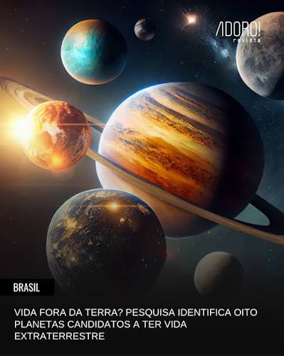

1° Notícia
Pesquisador brasileiro identifica oito exoplanetas com potencial de abrigar vida
Um estudo conduzido no Observatório Nacional analisou dados de mais de 6 mil planetas fora do Sistema Solar e selecionou oito mundos situados na "zona de habitabilidade", onde a temperatura permite a existência de água líquida.
- O avanço: O destaque da lista é o exoplaneta GJ 1002b, localizado a cerca de 16 anos-luz da Terra, que apresentou 98% de similaridade com o nosso planeta em termos de condições físicas e potencial atmosférico.
- Por que é incrível: Mapeia os alvos mais promissores para que telescópios espaciais busquem combinações de gases (como metano e oxigênio) que funcionam como bioassinaturas de organismos vivos.
